前言
新装好的系统就像毛坯房一样，能用但不好用，所以最基本的配置和美化还是要有的
Arch Linux 采用滚动更新，也就是没有固定的大版本，持续推送更新。好处是比较灵活，但更容易滚挂，解决方法是常更新，比如每天开机后更新一次。系统使用 Pacman 作为包管理器，滚动更新的命令是
|
|
-S（--sync）：同步软件包数据库并安装/升级软件包
-y（--refresh）：刷新本地软件包数据库
-u（--sysupgrade）：升级所有已安装的软件包到最新版本
基本配置
中文支持
字体
下载常用的中文字体，这一步是为了避免中文显示为方框或乱码
- Google Noto Fonts 系列：
noto-fonts、noto-fonts-cjk、noto-fonts-emoji - 思源黑体：
adobe-source-han-sans-otc-fonts - 文泉驿：
wqy-microhei、wqy-zenhei
|
|
设置中文区域
在当前用户目录创建 .xprofile
|
|
写入内容
|
|
保存退出
系统设置中文
之前安装过程中曾经修改locale.conf文件，设置成了全局英文，这是因为如果在/etc/locale.conf中设置全局中文，就会由于Linux内核的tty字形限制导致tty显示乱码
如果需要在桌面环境中启用中文显示，可以通过图形界面进行设置。点击开始菜单的System settings，找到Region&Language选项，进入后点击add more，找到简体中文并添加，最后重启来应用设置
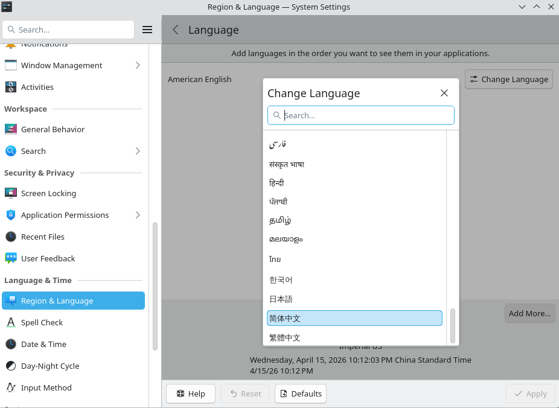
输入法
安装 fcitx5 输入法及中文支持
|
|
配置环境变量，编辑文件
|
|
在文件中添加以下内容
|
|
保存并重启来应用配置，然后打开设置>键盘>虚拟键盘，选择fcitx5并保存
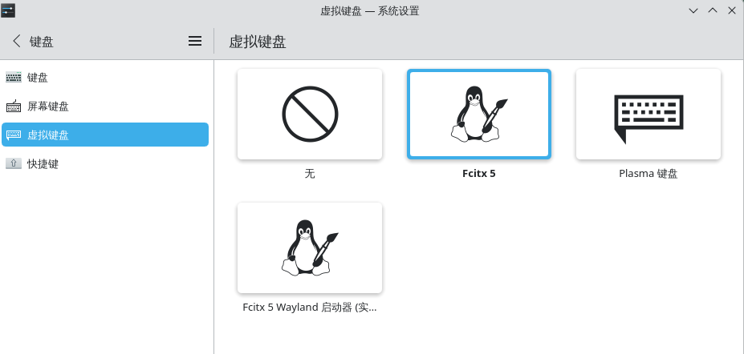
右击任务栏右侧的键盘图标，点击输入法设置，然后点击右下角添加输入法，选择需要的中文输入法添加即可
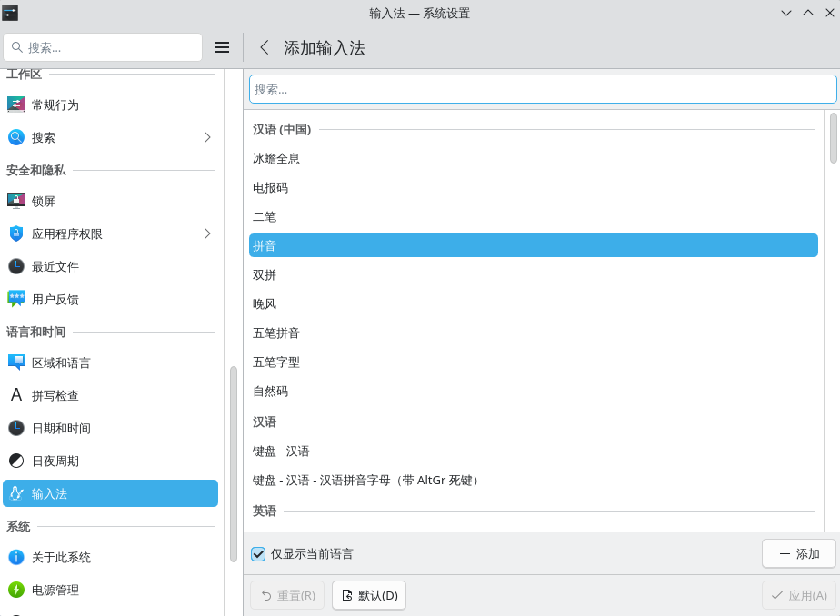
蓝牙
安装蓝牙并启动蓝牙服务
|
|
安装音频支持与蓝牙图形管理工具
|
|
bluedevil 只适用于 KDE，GNOME / i3 应该用 blueman
快照
根目录使用btrfs文件格式，最重要的功能就是快照，这样哪怕把系统搞崩了也可以随时恢复，非常方便
安装与配置
Btrfs安装依赖
|
|
通过 AUR 助手安装 Timeshift
|
|
查看一下版本，有版本号输出就是安装成功
|
|
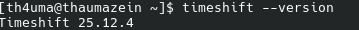
输入命令启动图形界面，或者从应用菜单搜索Timeshift启动，这里需要输入密码
|
|
选择快照类型，由于之前的系统根分区设置了btrfs格式，所以这里选择btrfs，而Rsync适用于 ext4、XFS 等其他文件系统。快照位置默认就是系统分区，无需修改
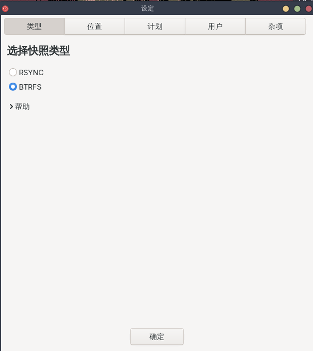
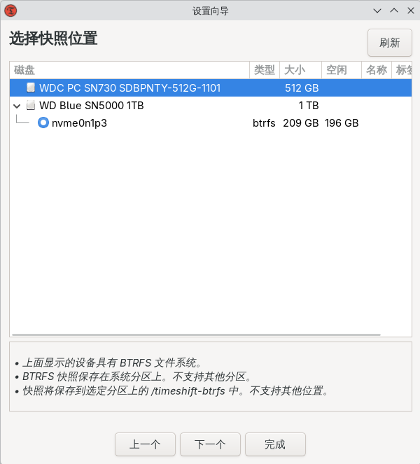
之后是设置快照数量。快照过多会占用大量磁盘空间，建议按照下面的数量设置：
-
每日快照：3-5 个
-
每周快照：2-4 个
-
每月快照：1-2 个
在重大操作前应该手动创建快照，保留重要的节点，如修改系统核心功能前
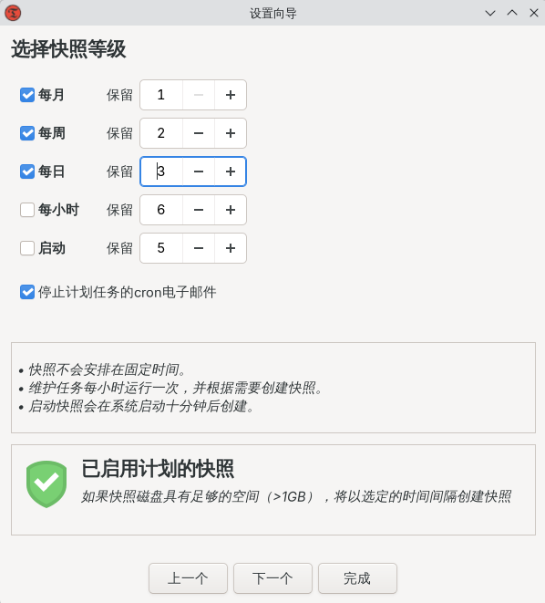
用户主目录默认排除不需要备份的目录如/home。这是因为快照功能是针对系统，如果包含个人数据可能会导致更改被覆盖
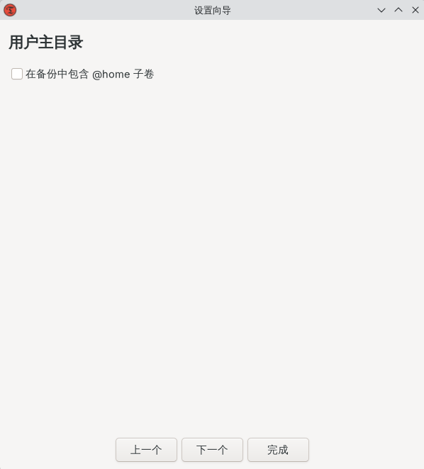
系统恢复
本来以为之后折腾环境的时候才能用到恢复，没想到第一天就碰上了，还好之前保存了快照
如果出现小问题，还可以进入系统与图形界面，那么在timeshift的GUI中直接选择快照恢复即可
我这次遇到的问题是开机卡在进入gui前。表现为启动时显示的一堆日志一切正常，然后黑屏，左上角有一个光标，只有鼠标光标可以正常移动
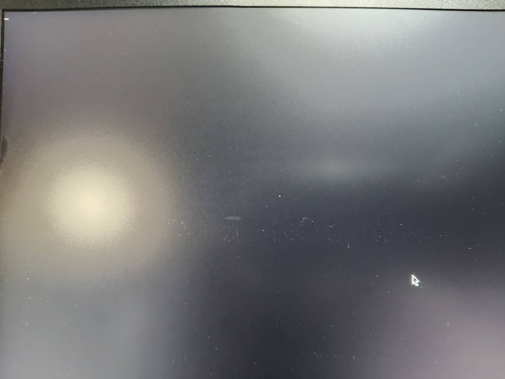
进入Live USB环境，首先查看磁盘信息
|
|
挂载需要恢复的盘符，也就是根目录所在的盘
|
|
进入chroot
|
|
列出快照目录
|
|
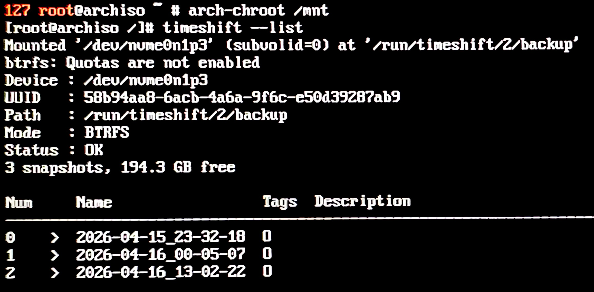
进行恢复，执行命令后首先输入目标快照的序号，然后确认信息，最后输入y进行恢复
|
|
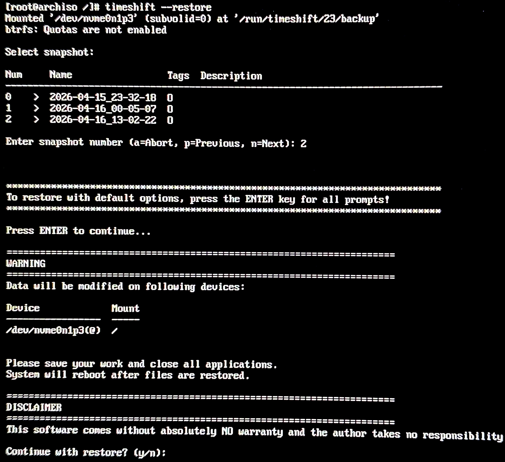
退出chroot，解除挂载
|
|
重启后可以看到系统已经恢复正常
最后我发现卡死是sddm换主题导致，我的环境不适配左侧是登录栏的那一系列主题，因此在设置后，在登录界面会卡死黑屏，从而执行不了任何操作
更换其他主题，我观察到每个主题在登录界面出现之前，都会经过这个黑屏界面，判断应该是显卡驱动或者依赖缺失导致的卡死
Zsh
zsh 基本兼容 bash，但功能更丰富，比如：
- tab 补全更强
- 目录跳转更智能
- 支持大小写自动修正
- 主题系统丰富
- 插件生态完整
安装 Zsh
|
|
将zsh设置为默认 shell
|
|
首次启动 zsh 时会生成配置文件，在这个界面输入 0 就会在当前用户主目录下创建一个空 .zshrc 文件，这是zsh 的配置文件
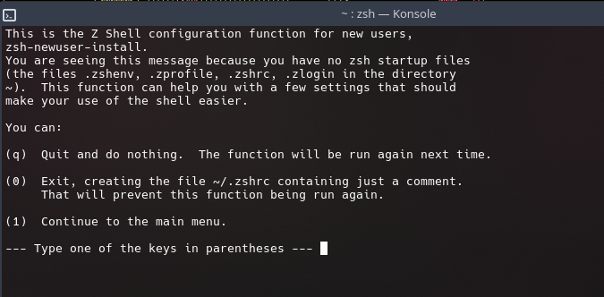
安装 oh-my-zsh
|
|
安装插件
|
|
- zsh-autosuggestions：根据历史命令给出灰色补全建议
- zsh-completions：增强补全能力
- zsh-syntax-highlighting：命令语法高亮，正确绿色，错误红色
- z：内置文件夹快捷跳转插件
- extract：内置插件，使用
x命令即可解压任意压缩文件
安装powerlevel10k主题
|
|
修改配置
编辑配置文件
|
|
修改主题：
|
|
启用插件
|
|
zsh-completions 需要初始化补全系统，在文件中添加
|
|
重启终端后根据引导配置好powerlevel10k，zsh就配置完成了
Git
Linux默认换行符是LF，而Windows是CRLF。如果两个系统混用并提交同一个仓库的话，每次切换系统提交，都会看到类似这样的大量文件更改，这就是换行符的转换
|
|
为了解决这个问题，建议将 Git 配置为在提交时将 CRLF 转换为 LF，但在检出时不执行自动转换。这样既避免了换行符导致的程序报错，又可以不每次切换系统都显示文件全部更新
|
|
-
core.autocrlf true会在提交时把CRLF转为LF，在检出时再转换回CRLF，适合跨平台使用 -
core.autocrlf false会保持文件原有的换行符，不做转换，适合操作系统一致的场景 -
core.autocrlf input只会在提交时转换CRLF为LF，检出时不做任何转换，适合只使用LF换行符的环境
验证一下，如果输出input说明设置成功
|
|
科学上网
我使用的是FlClash和Chrome，最开始流量完全不走代理，因此先进行测试
这个命令测试代理是否正常，我这里报错说明流量根本没走代理
|
|
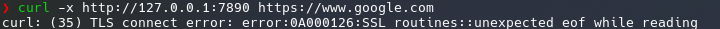
查看端口信息，可以看到 7890 端口处于监听状态，说明代理是启动的
|
|
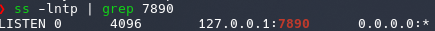
查看详细连接过程
|
|
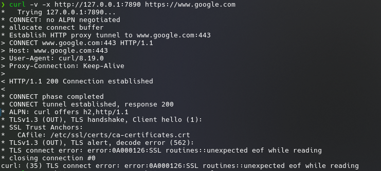
在 FlClash 中将 global 模式下的 DIRECT 改为代理节点再测试，这次连接正常，但浏览器依旧无法访问
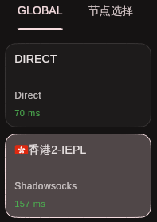
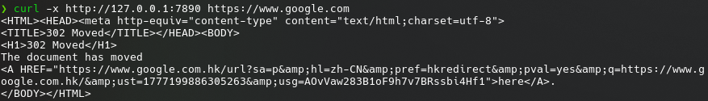
使用浏览器强制代理，还是没有效果
|
|
curl返回正常说明代理没有问题，浏览器强制指定代理之后还是打不开，说明并不是系统代理没有对浏览器生效，而是浏览器本身的问题
浏览器和curl的区别在于：curl通过指定的代理连接，而Chrome默认开启的QUIC是UDP连接，不一定走HTTP代理，而是直连服务器，从而绕过代理
尝试启动浏览器时禁用 QUIC，访问成功，因此是QUIC导致的问题
|
|
在浏览器中关闭QUIC，在地址栏输入：
|
|
然后搜索quic，在结果中将Experimental QUIC protocol 设置为 Disabled，重启浏览器生效
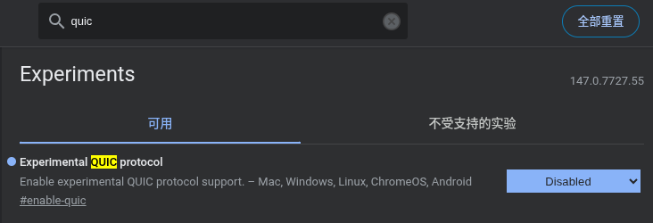
KDE美化
分辨率
先生成 modeline
|
|
可以看到类似的输出，记住最后面的 Modeline
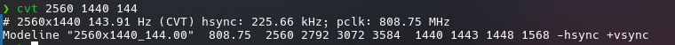
将它加入 xrandr，注意此处新模式的名字不能与现有模式的一样
|
|
然后查当前屏幕输出口名称，常见是 eDP-1（笔记本）或 DP-1 / HDMI-1
|
|
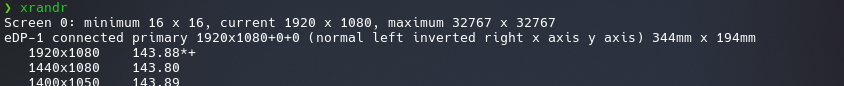
把新模式挂上去
|
|
进行切换
|
|
一般情况下这一步成功后设置便完成了，但我这里出现了报错，查看 xrandr –verbose 的输出后发现模式确实被成功注册，但无法实际应用这个分辨率
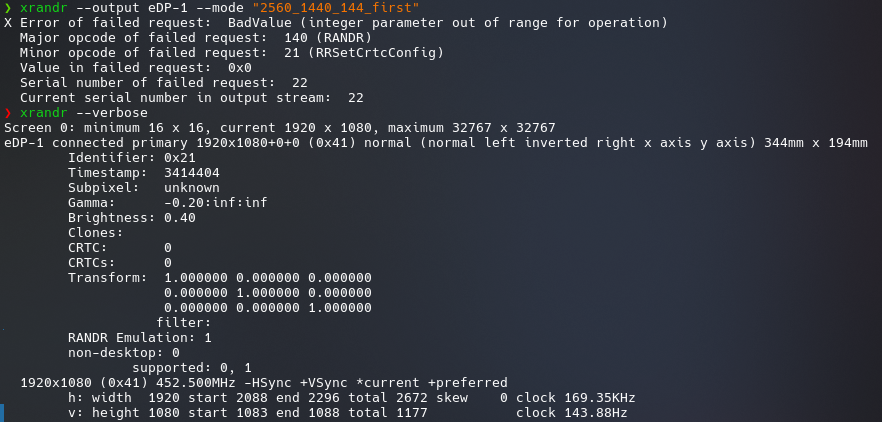
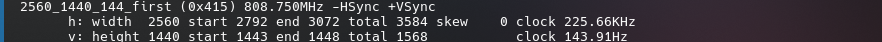
尝试降低分辨率到120hz，依旧报错
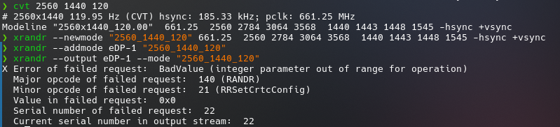
最后查看系统识别的屏幕分辨率，发现是1k，也就是说不是设置问题，是系统根本没有识别出来我屏幕真正的分辨率。至于原因，可能涉及到显卡驱动等多种问题。我觉得麻烦，而且可能搞乱系统，就没有继续探究下去了，也许之后忍受不了这个分辨率的时候会重新研究
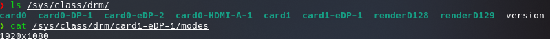
背光
突然发现我的界面非常暗，大概是windows的百分之八十亮度，但控制面板的亮度已经设置成百分百了，估计是亮度映射有问题
我选择使用 brightnessctl 工具来调整亮度
|
|
增加亮度 10%
|
|
查看最大亮度数值
|
|
直接设置数值
|
|
本以为还需要修改映射才能设置成功，但重启以后发现亮度正常，控制面板调整亮度也不会出现突然变暗的情况，说明映射自动设置成功了，完美结束
主题
在系统设置的颜色和主题中点击 获取新部件然后选择自己喜欢的安装并应用即可，我的配置是：
-
欢迎屏幕：Simple tux
-
登录屏幕：Breeze微风
-
图标：Tela grey dark
-
窗口装饰：Nordic
-
全局主题：Nordic
终端
首先进入设置，将工具栏隐藏
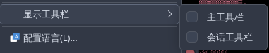
然后点击管理配置方案配置，新建颜色配置，可以在这里对颜色进行设置
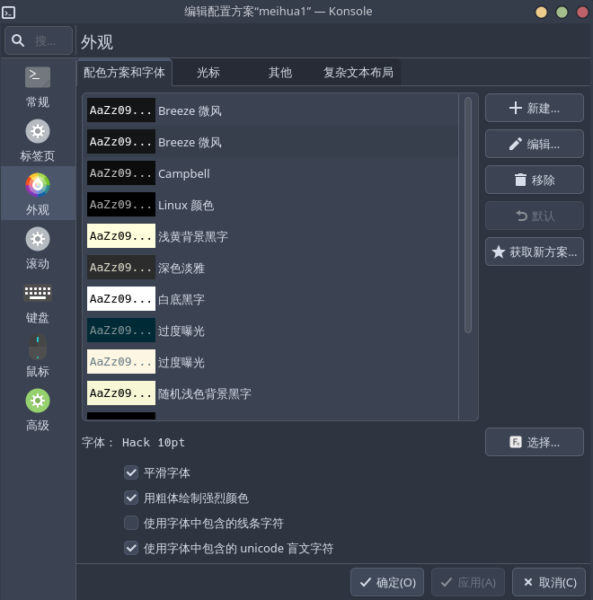
桌面布局
更改桌面布局，本质上就是调整面板和小组件的位置以及样式
- KDE 桌面中无论是菜单栏还是顶栏，本质上都是面板
- 面板上的元素，如时钟，托盘图标都是小组件
- 小组件可以放置在面板里，也可以直接放在桌面上
右击任务栏，点击显示面板配置，这里有添加面板的选项，可以根据自己情况添加边栏，我这里就是添加了一个顶栏
然后可以在这里进行设置
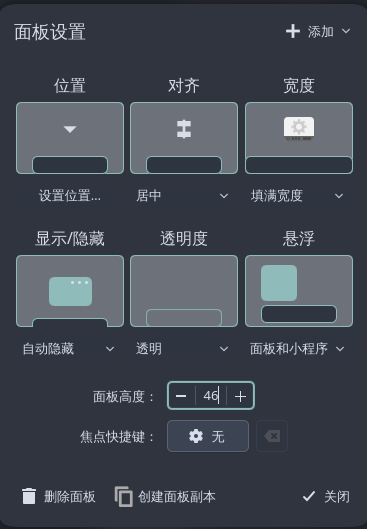
点击添加或管理小部件，将组件拖到边栏和桌面任意位置添加
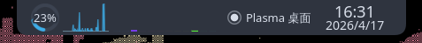
其他设置
以空会话启动：
默认情况下，KDE 桌面环境中关机之后再开机会恢复先前保存的会话，可以打开 系统设置>开机与关机>桌面会话，将 登入时 的选项改为 以空会话启动，然后应用
窗口管理：
进入设置>窗口管理>桌面特效，可以设置透明度，动画等
电源管理：
进入设置>电源管理，修改屏幕变暗的时间和自动睡眠时间
附：Windows经常卡死解决办法
安装好双系统后，我在使用Windows时经常是什么都没干，系统就卡死了。刚开始鼠标和CapsLk键还有用，但尝试用快捷键调出任务管理器后，就彻底卡死，只能强制关机。刚刚安装好的时候频率不高，大概一天一次，但配置完GUI后频率变成半小时一次。我忍无可忍，只好动手修复
首先在控制面板>系统和安全中打开事件查看器，可以看到出现了一些报错，显示创建 TLS 客户端 凭据时出现严重错误。内部错误状态为 10013。 时间也和卡死的时间点吻合
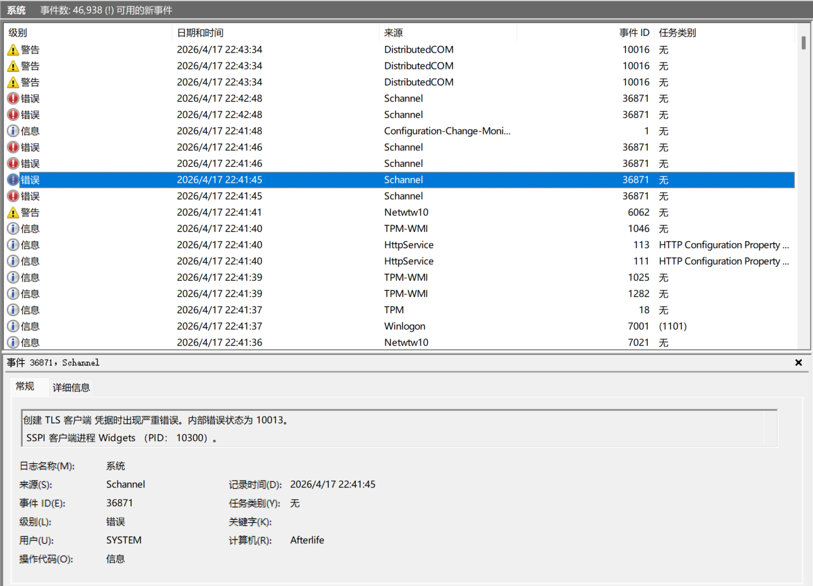
查看教程，在控制面板>网络和 Internet>网络和共享中心>Internet选项>高级里取消勾选SSL协议和TLS协议的旧版本，再查看日志就没有报错了
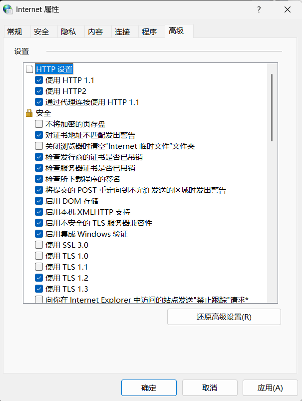
然后我更新了一下显卡驱动，问题解决
后续：没过几天又出现了卡死的情况，这次报错是安全启动的问题。考虑到之前曾在bios中关闭了安全启动，我又重新进行检查。电脑运行时偶尔还会突然风扇猛转，CPU占用百分百，这也许是电源管理异常？这个问题留待之后解决
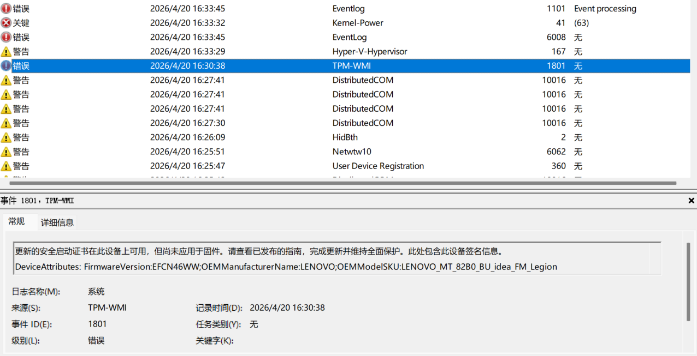
参考
arch配置中文和输入法 - suiseiseki - 博客园
Arch Linux 系统备份与恢复利器：Timeshift 完全指南 — geek-blogs.com
typora 0.11.18 最后的免费版安装方法（含 windows 和 archlinxu）
zsh 安装与配置，使用 oh-my-zsh 美化终端 | Leehow的小站
Archlinux下2K带鱼屏设置分辨率的方法背景 本人使用的笔记本电脑安装了Archlinux之后，通过HDMI接口外 - 掘金